chasse aux énigmes
Chasse aux énigmes dans tout le collège.
Chaque participant recevra un carnet contenant l'emplacement des énigmes,
qui permettra d'arriver au mot magique...
Carnet à récupérer chez M. Klenklé, en salle A24, durant toute la semaine.
créateurs : Sabine, Mohamed, Telman, Kety et Nada.
Maths en folie
Compétition de calcul mental rapide, par équipe de 3.
9 thèmes de mathématiques (additions, multiplications...), donc 3 thèmes par membre de l'équipe.
Vendredi 14 mars, à partir de 15h45, en salle A24.
Inscription de votre équipe chez une de ces personnes : Alaa, Yusuf et Lina,
en cas de problème, rendez-vous chez M. Klenklé.
Équipes mixtes possibles (adultes, élèves, classes différentes...)
créateurs : Alaa, Yusuf et Lina.
lez'escape
Mardi 11 et jeudi 13 mars, en S3, vous pourrez participer à une épreuve d'Escape Game que M. Klenklé vous présentera en début d'heure.
Inscription, avant lundi 15h30, auprès de M. Klenklé, que vous trouverez dans la cour, en salle A24 ou sur MBN.
Adultes et élèves sont les bienvenus !!
créateur : M. Klenklé.
Pajarita
Création de la plus grande mosaïque du monde. Chaque personne, enfants et adultes, pourra créer un motif qui sera assemblé aux autres pour former une magnifique mosaïque.
Le programme de construction est à chercher chez M. Klenklé, que vous trouverez dans la cour ou en salle A24.
créateur : M. Klenklé.
 Math'Kang
Le concours international Math'Kangourou aura lieu jeudi 20 mars en M3-M4.
Il n'y a que 12 places pour les niveaux 6eme-5eme et 13 places pour les niveaux 4eme-3eme.
Les qualifications auront lieu vendredi 14 mars, en S2.
Inscription chez M. Klenklé
créateur : M. Klenklé.
informations
Pour plus de détails ou en cas de besoin d'aide, veuillez vous rendre auprès de l'une de ces personnes : Telman, Lina, Arda, Nada, Sabine, Mohamed, Yusuf, Alaa et Kety.